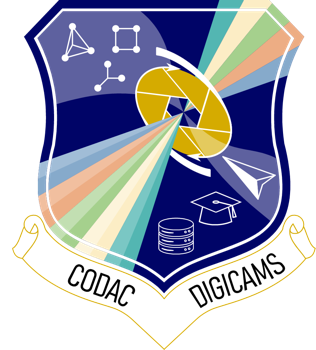
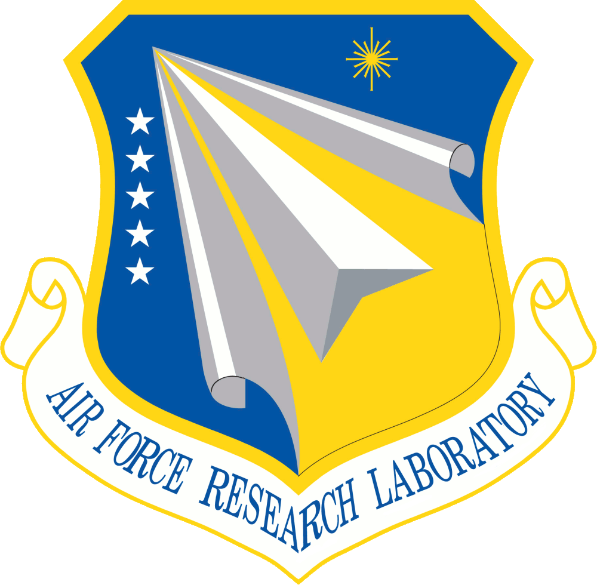
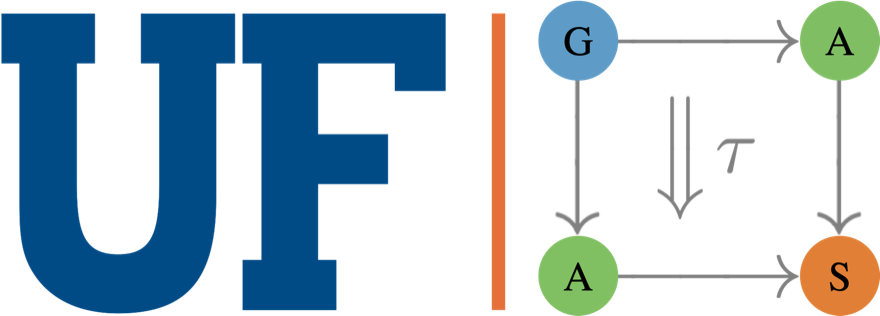
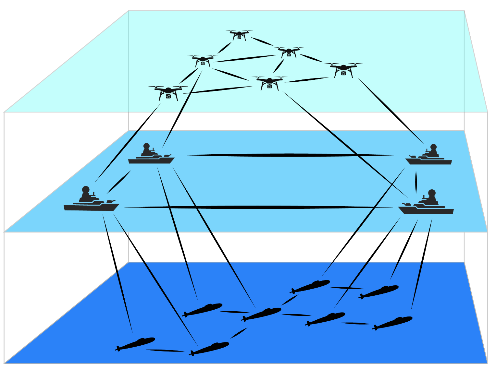
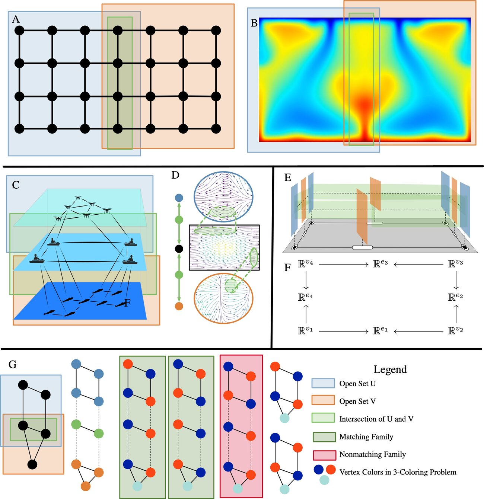
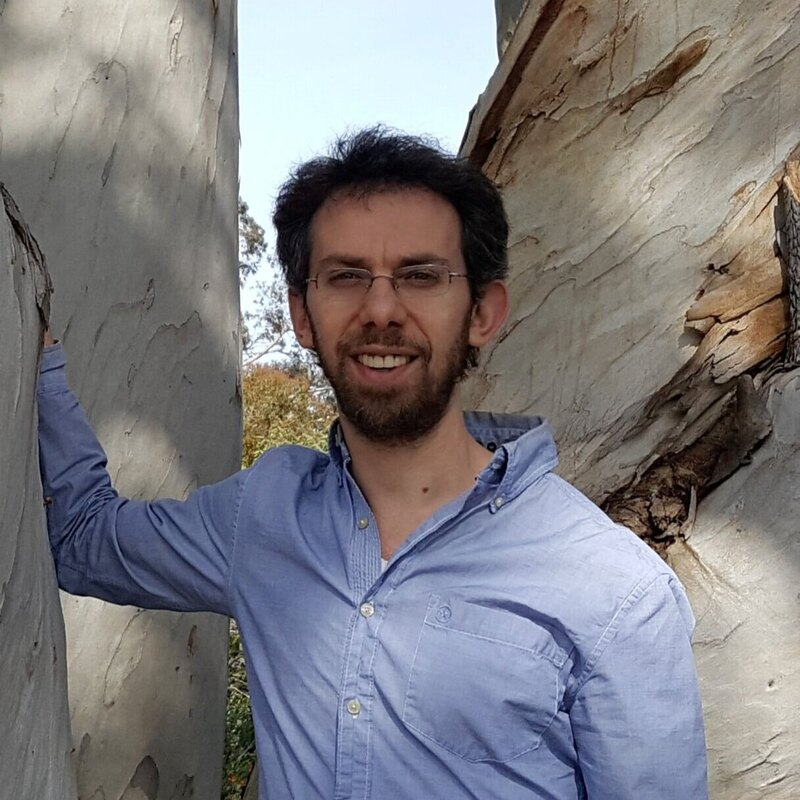
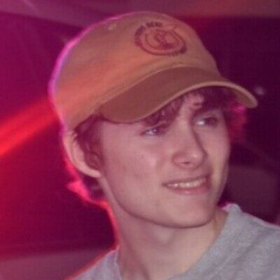
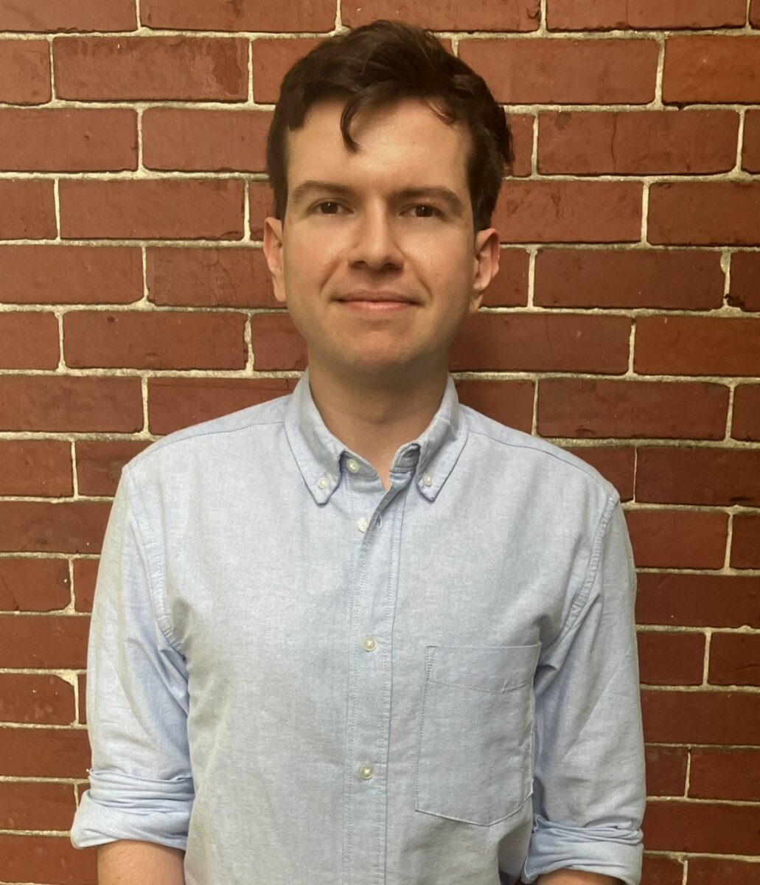
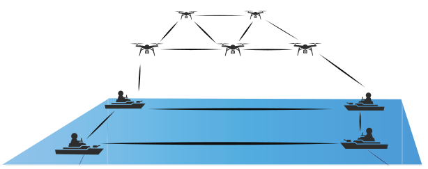
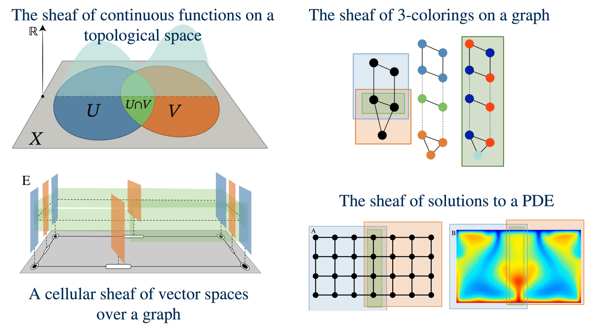

The Program at a Glance

Optimal Parts, Suboptimal Whole

One Foundation for Optimization, Dynamics, and Control
Sheaves Are the Common Language

Where the Teams Meet
The Team






Recent Papers
Collaboration So Far
Who Can Track Whom Is a Cohomological Question

Live: Who Can Track Whom
The Cellular Sheaf Explorer
Manifesto: A Knowledgebase for Sheaf Theory
The Year at a Glance
Working With the Air Force
- A joint journal paper with AFRL [9], and a CDC paper with an AFRL co-author [6]
- Hans Riess at AFRL/RF for part of the summer
- Workflow search for operational vulnerabilities, designed with Matthew Klawonn
- Open-source software, immediately available to the government
- Problems: missions and operations for hierarchical planning and workflow search
- Hosts: summer residencies for students, following Hans's at AFRL/RF
- Users: engineers willing to pilot the CatColab sheaf interface
- A cadence: regular check-ins with the program manager and AFRL collaborators
1 · Local to Global Guarantees

2 · New Settings: Time, Geometry, Energy, Adversaries
3 · Scale and Hierarchy
4 · Tools, Hardware, and Transition
References
[1] T. Hanks, H. Riess, S. Cohen, T. Gross, M. Hale, and J. Fairbanks. Distributed multi-agent coordination over cellular sheaves. IEEE Conference on Decision and Control, 2025. arXiv:2504.02049.
[2] J. Hansen and R. Ghrist. Toward a spectral theory of cellular sheaves. Journal of Applied and Computational Topology, 3(4):315–358, 2019.
[3] Y. Zhao, T. Hanks, H. Riess, S. Cohen, M. Hale, and J. Fairbanks. Asynchronous nonlinear sheaf diffusion for multi-agent coordination. IEEE American Control Conference, 2026. arXiv:2510.00270.
[4] K. A. Currier, W. Leal, B. C. Fallin, J. Fairbanks, and W. E. Dixon. From local to global: sheaf-theoretic control barrier functions on manifolds. IEEE Conference on Decision and Control, 2026, to appear.
[5] T. Hanks, C. F. Nino, J. Bou Barcelo, A. Copeland, W. E. Dixon, and J. Fairbanks. Heterogeneous multi-agent multi-target tracking using cellular sheaves. European Control Conference, 2026. arXiv:2512.24886.
[6] H. Riess, Y. Huang, M. Klawonn, G. Zardini, and M. Hale. Quantale-enriched co-design: toward a framework for quantitative heterogeneous system design. IEEE Conference on Decision and Control, 2026, to appear. arXiv:2603.29921.
[7] K. Currier, W. Leal, G. Rauta, A. Copeland, J. Fairbanks, and W. E. Dixon. Whitney control barrier functions: a mesh-based geometric approach via discrete exterior calculus. IFAC World Congress, 2026.
[8] N. Anwer, H. Riess, and M. Hale. Multi-agent system identification with nonlinear sheaf diffusion. Asilomar Conference on Signals, Systems, and Computers, 2026, to appear. arXiv:2605.11204.
[9] T. Hanks, M. Klawonn, E. Patterson, M. Hale, and J. Fairbanks. A compositional framework for first-order optimization. Mathematical Structures in Computer Science, accepted. arXiv:2403.05711.
[10] B. M. Bumpus, W. Leal, J. Fairbanks, M. Karvonen, and F. Simard. Towards a unified theory of time-varying data. Applied Categorical Structures, 2026. doi:10.1007/s10485-026-09860-4.
[11] W. Leal, B. M. Bumpus, J. K. Nickel, J. García, J. Fairbanks, and W. E. Dixon. Time-varying data as sheaves: an invitation to narratives. Submitted, 2026. arXiv:2609.09056.
[12] B. Fallin, W. Leal, A. Copeland, B. M. Bumpus, J. Fairbanks, and W. E. Dixon. A temporal cellular sheaf framework for multi-agent systems with switching communication topologies. American Control Conference, 2027, submitted.
[13] I. Kadosh, R. Samuelson, and J. Fairbanks. Layered control for distributed sheaf coordination. IEEE Control Systems Letters, submitted with the ACC 2027 option.
[14] AlgebraicJulia. CellularSheaves.jl, Decapodes.jl, and CombinatorialSpaces.jl. algebraicjulia.github.io